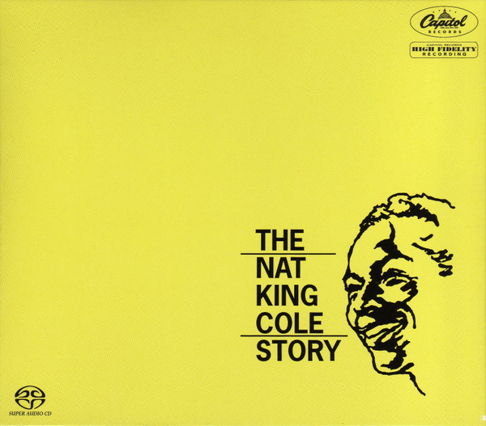

SACD
The Nat King Cole Story
Nat King Cole
Media: — · Sleeve: —
—
Personal
Discogs SuggestedCA$418.65
Discogs MedianCA$418.65
Discogs HighCA$418.65
- Physical Copy ID
- BB-SACD-046
- Year
- 2013
- Label
- Capitol Records, Analogue Productions
- Catalog #
- SWCL 1613, CAPP 1613 SA
- Country
- USUS
- Genre / Style
- Jazz, Pop · Big Band, Easy Listening, Vocal